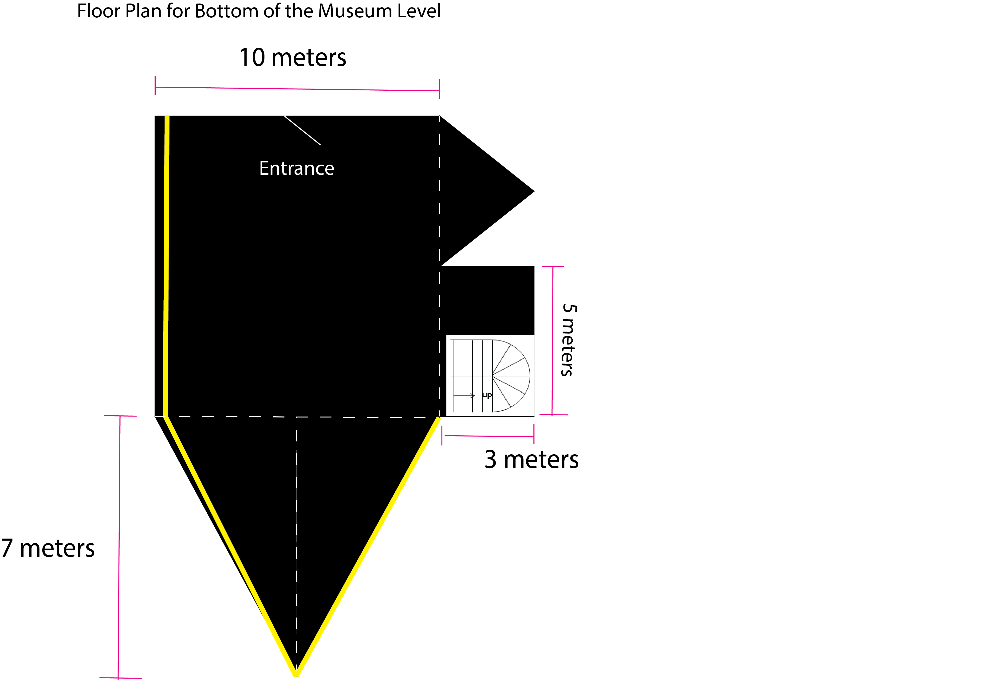
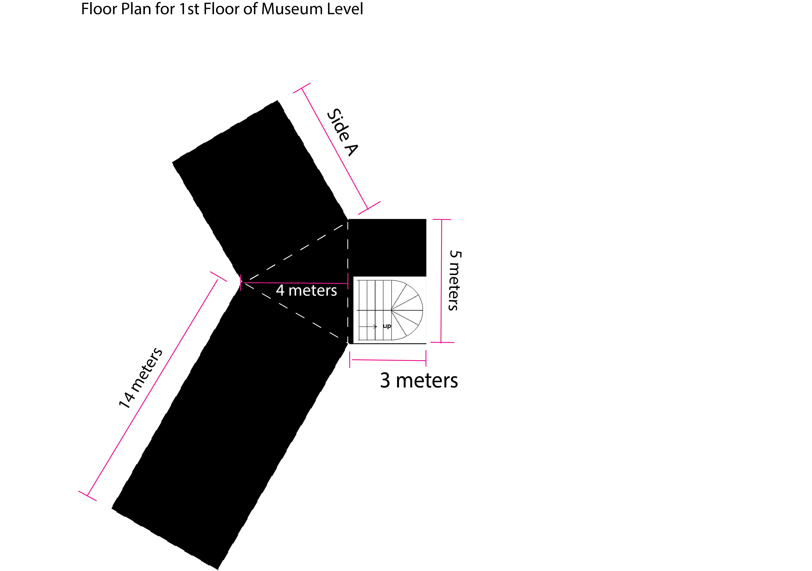
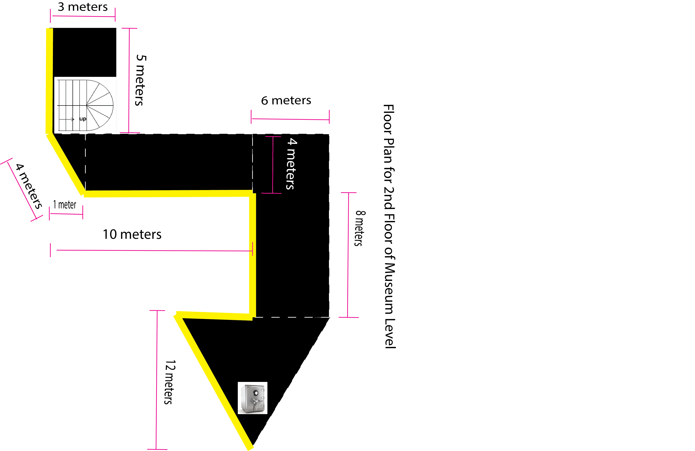

Below you are given various floor plans for the museum. Each each floor plan you need to answer the central question using what you have learned with geometry.
Below is the bottom floor of the museum. You need to answer 2 questions that are necessary for the heist. First, You need the total area of the bottom floor. As you can see the bottom floor is is composed of several triangles and a perfect square for the entrance along with a side rectangle that holds the stair case the the first floor. Second, you will need to calculate the the total length of the yellow line segment. That line represents the exact path that aren't covered by cameras. This will allow you to get from the entrance to the stairs without detection. Please note that when you calculate the area of the room with the stairs, you need to include the stairs in the calculation. That room is a rectangle of the same size for each floor.
Below is the first floor of the museum. You need to answer one question that is necessary for the heist. You need the total area of the floor. as you can see the floor is composed of several segments. The first room you enter from the stairs is the same size as the room below. The triangle room's sides all have the same length. The long hallway is twice the length and area of the shorter hallway.
Below is the second floor of the museum. ou need to answer 2 questions that are necessary for the heist. First, you need the total area of the floor. as you can see the floor is composed of several segments. The first room you enter from the stairs is the same size as the room below. Second, you will need to calculate the the total length of the yellow line segment. This is the path you can take that will be on the edge of the rooms in order to bypass security.
